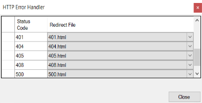
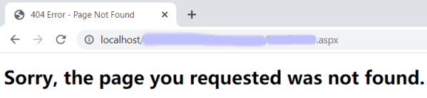

Enables HTTP Error Handlers. Scope Level: Environment Description
This property enables the use of error code handlers to control how to respond when an application error or exception occurs. When errors occur, the user shouldn't have to read technical error details which they cannot understand; instead, a friendly page that tells them what happened should be displayed. Also, proper handling of errors is recommended to hide sensitive technical information that can be exploited. How to specify default errorsEnable this property (environment level) and associate an HTTP Error Code to a File previously uploaded to the KB as a File object (using a plain HTML file is recommended). Typically, you might configure the following kind of errors:
So, the resulting configuration could be the following handlers (Http Error Handlers Values property):  If the application returns any of these errors, the associated HTML page will be rendered to the browser. For example, if the page does not exist, generally a 404 error is displayed. In this case, the mapping will show the 404.html file.  ConsiderationsWhen using the C# generator, valid values are between 400 and 999 inclusive; otherwise, the following error will be displayed: The 'statusCode' attribute is invalid. Integer value must be between 400 and 999 inclusive. In general, Java Application servers such as Tomcat will directly handle the 400 (Bad Request) error and it will not be delegated to the web application. Not implemented in the NetCore generator. Run-time/Design-timeThis property applies only at design-time. How to apply changesTo apply the corresponding changes when the property value is configured, execute a Build All. AvailabilityThis property is available since GeneXus 16 Upgrade 11. See Also
|
| Backlinks |
| Http Error Handlers Values property |